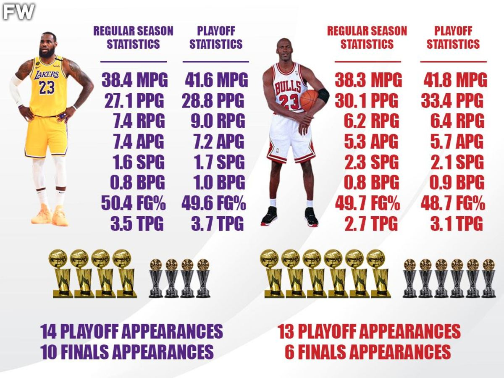

Career Accolades:
LeBron James' accolades are a testament to his extraordinary and unparalleled career in the NBA. He has won **4 NBA Championships** (2012, 2013, 2016, 2020) with the **Miami Heat**, **Cleveland Cavaliers**, and **Los Angeles Lakers**. His individual brilliance is highlighted by **4 NBA MVP Awards** (2009, 2010, 2012, 2013) and **4 NBA Finals MVP Awards** (2012, 2013, 2016, 2020). LeBron’s consistency on the court is reflected in his selection to **17 NBA All-Star Games** (2005–2021) and his dominance in All-NBA honors, earning **13 All-NBA First Team** selections throughout his career, alongside two **All-NBA Second Team** and two **All-NBA Third Team** selections. His defensive prowess has been recognized with **5 All-NBA First Team Defensive** honors and a **Second Team selection** in 2014. In addition to these accolades, LeBron became the **NBA's all-time leading scorer** in 2023, surpassing Kareem Abdul-Jabbar’s long-standing record. He’s also been named the **NBA Rookie of the Year** in 2004, won the **NBA All-Star Game MVP** three times (2006, 2008, 2018), and has been named to the NBA’s **75th Anniversary Team** as one of the 75 greatest players in league history. His performances on the global stage have earned him **2 Olympic Gold Medals** (2008, 2012) and **1 Olympic Bronze Medal** (2004). LeBron’s career has also seen him become the first player in NBA history to record **30,000 career points, 8,000 career rebounds, and 8,000 career assists**. He has led the league in assists while scoring 25+ points per game in multiple seasons, and he became the youngest player to score 40 points in an NBA game in 2005. Additionally, he made history with **the block** in the 2016 Finals against Andre Iguodala, leading the Cleveland Cavaliers to their first-ever NBA Championship, a monumental victory in the face of a **3-1 deficit** against the Golden State Warriors. LeBron has maintained his elite status in the NBA well into his late 30s, a testament to his longevity, adaptability, and commitment to excellence. With his remarkable list of accomplishments, milestones, and consistent performance, LeBron James’ legacy as one of the greatest basketball players of all time is secure, and it continues to evolve as he remains an influential force in the league.
